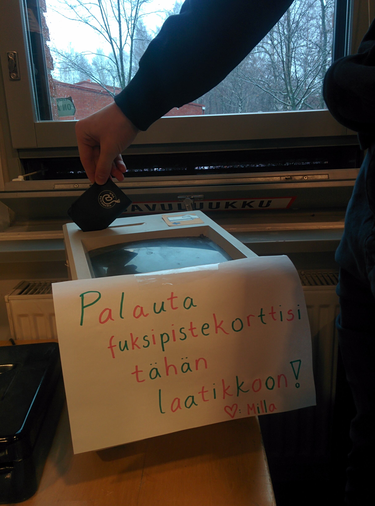

Waarin wiikkowiesti 12/2017 - Joulu on... nyt!
01.12.2017 fuksit / wiikkoviesti / pistekorttien palauttaminen /
Terve,
Viime wiikkowiestin jälkeen on keretty Itämeren vesille ja Tukholmaan, bilettämään mielettömässä kasaritunnelmassa sekä ihailemaan fuksien speksispektaakkelia eilen TiKkujouluissa. Pikkuhiljaa vuosi lähenee kuitenkin loppuaan (tänään on nimittäin joulukuu!), ja sitä varten olisi aika tehdä fuksipistekorttien syyskatsaus. Käykäähän palauttamassa pistekorttinne kiltahuoneelle ennen kuin lähette joulunviettoon (viimeistään 21.12.)!
<3 Milla
Sisällysluettelo
- Tärkeää
- Fuksipistekorttien palautus, viimeistään 21.12.!
Tärkeää
1. Fuksipistekorttien palautus, viimeistään 21.12.!
Syksyn vaihtuessa jouluun on aika palauttaa pistekortit! Rakkaalta kiltahuoneeltamme löytyy laatikko, johon voit käydä tiputtamassa pistekorttisi. Muista palauttaa pistekorttisi, ennen kuin lähdet joulunviettoon, kuitenkin viimeistään 21.12.!
Jos sinulta puuttuu fuksipisteitä, laita pistekortin väliin lista puuttuvista pisteistä, niin merkkailen ne loman aikana!
